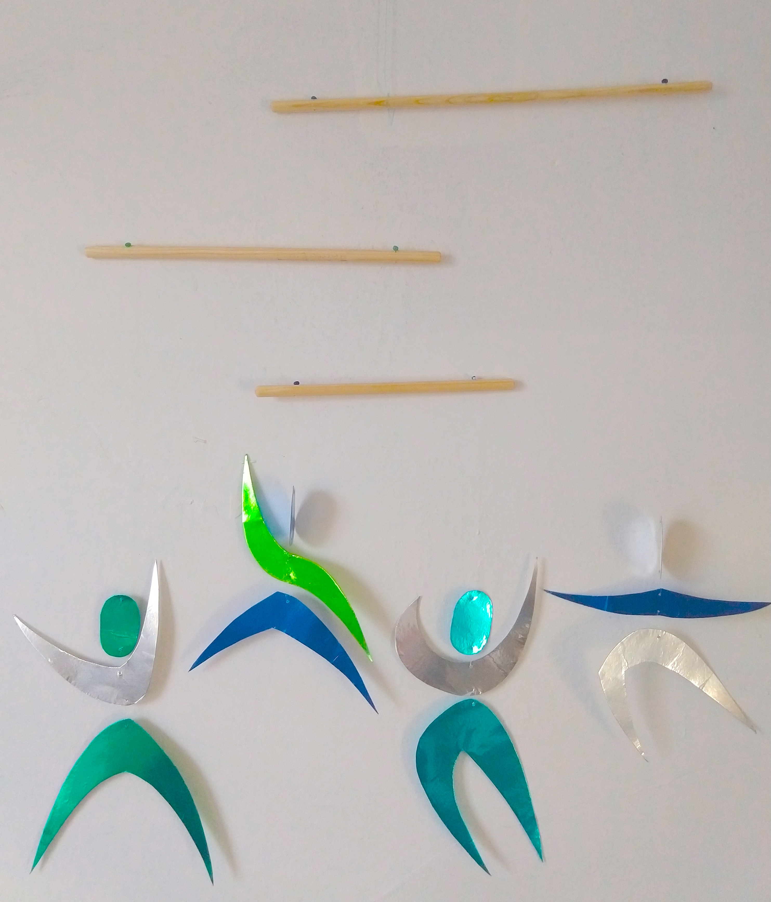
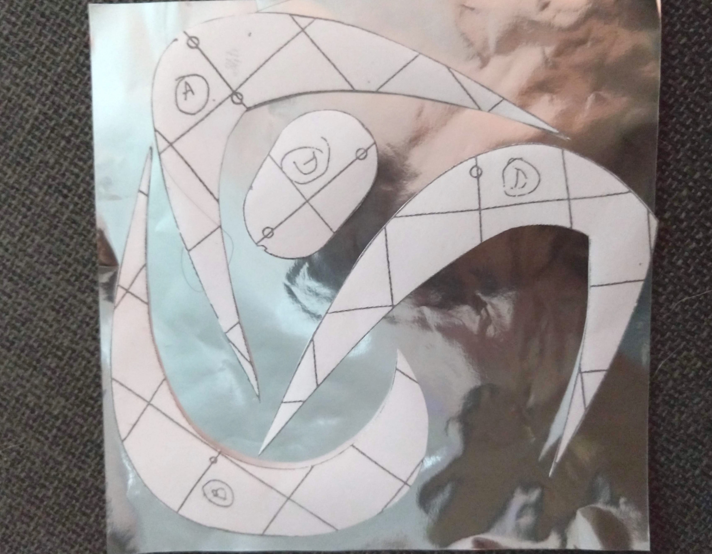
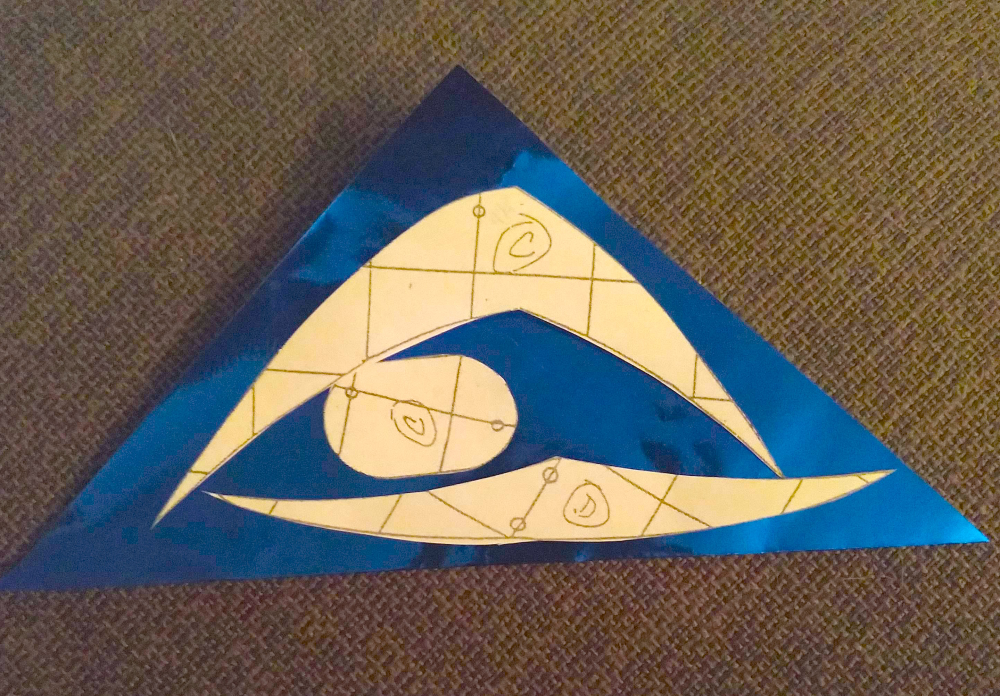
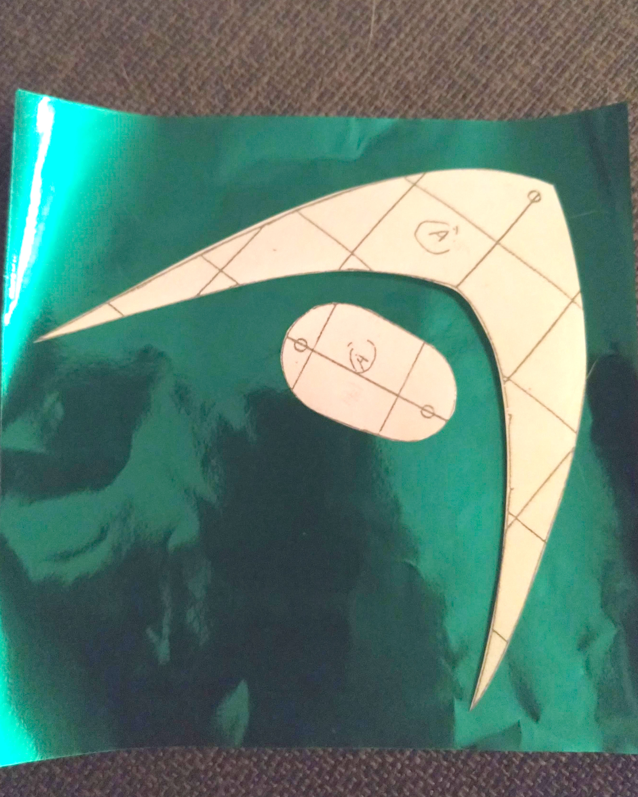
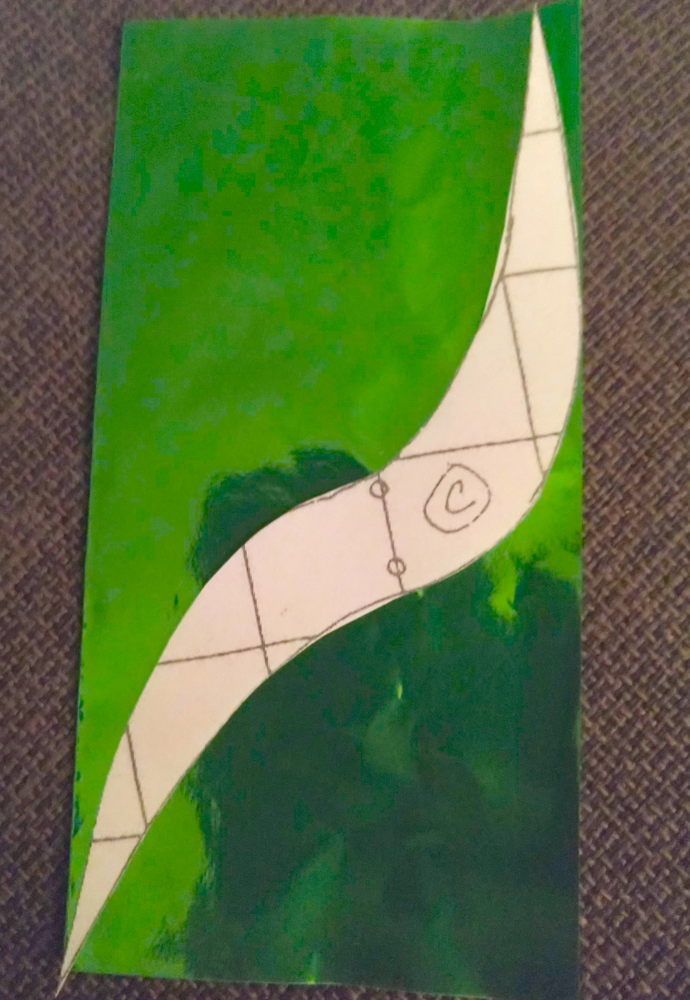
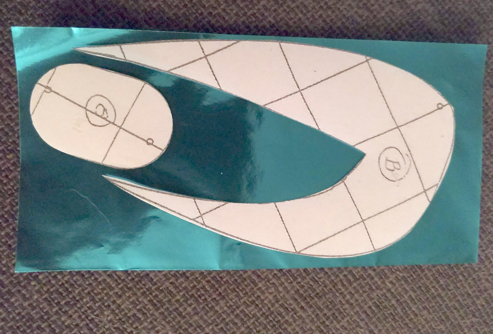
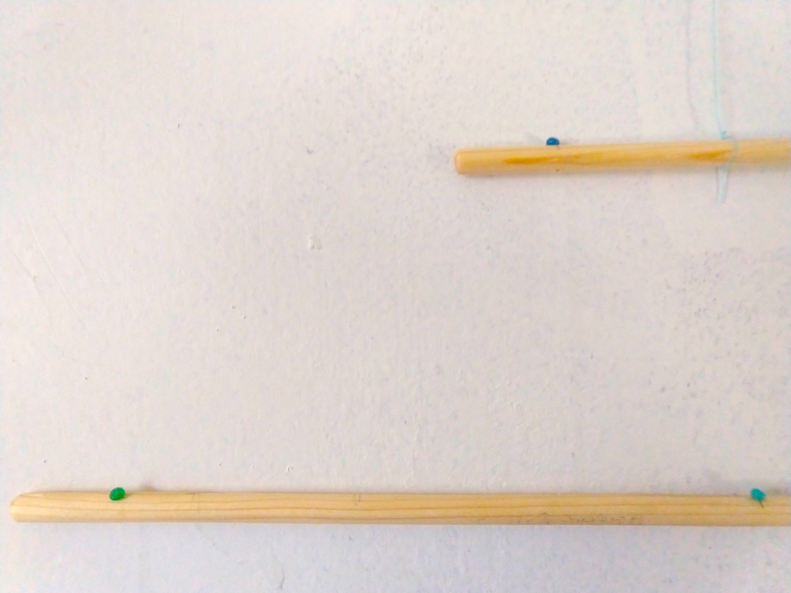

The Montessori Mobiles: Dancers
Part 4: The Dancers Mobile

This is the last mobile in the series of visual mobiles, and is easily my favorite to watch in action…It is presented between 2 to 3 months. I have skipped past the Gobbi for now, because I am still working on it…so stay tuned for that!
Although some DIYs have all of the Dancers hanging from one dowel rod, I opted to hang them in a similar fashion to Murani because this makes them more dynamic. Of course, this does mean it takes up more space.
Materials
- cardstock (in any color but I chose to match it to the relective paper I used)
- metalic oragami paper (I got a variety pack so I would have lots of color options)
- invisible/clear thread
- 30 cm dowel (3⁄8 inch diameter)
- 25 cm dowel (3⁄8 inch diameter)
- 18 cm dowel (3⁄8 inch diameter)
- dancers template https://docs.google.com/file/d/1xA97DL1V_1vVPGtRw085br5MEBa0z6mhHd-iuIa7HNDmVis8LWFYm6SlKnEJ/edit
Step 1 - The first thing I did was to pick out the colors I wanted to use, which I did by simply laying out different sheets of oragami paper together to see what looked appealing (I went with blues, greens, and silver). After printing off the template from Texas Health Moms, I cut out each shape so that I could arrange the pieces on the oragami paper before actually making any cuts - you need two of each, so I wanted to guarentee I was going to have enough in each color I was using. Important Note make sure when you are ready to cut out the oragami paper that the two pieces you cut out for each template shape are mirrored!
I then glued down one copy of each shape to cardstock (again you could use white cardstock or a color that will match the reflective paper you want to use), cut out the cardstock around the oragami paper, and then glued the remaining, matching piece of oragami paper on the other side of the cardstock.





Step 2 - Once the glue has had time to dry, I poked holes with a pushpin, to connect the pieces following the template. Due to the very fine nature of the thread, and in order to prevent tying the pieces together too tightly, I used the end of a small paintbrush layed across the pieces, to create a hard surface to knot the thread against that when removed creates a big enough loop to allow the dancers to “dance”.
Step 3 - As with the previous mobiles, I drilled holes 3 cm from each end of all three dowels. I tied beads to the ends of 6 pieces of thread and put these through the holes, with the beads on the top side.

I then tied the loose end from one end of the longest dowel around the mid-point of the medium dowel, and tied one loose end from the medium dowel to the mid-point of the shortest dowel. Once the dowels were connected in this fashion, I could decide what lengthof thread to use for each dancer so that they were grouped in an asthetic way, that also allowed each figure to move around each other freely.